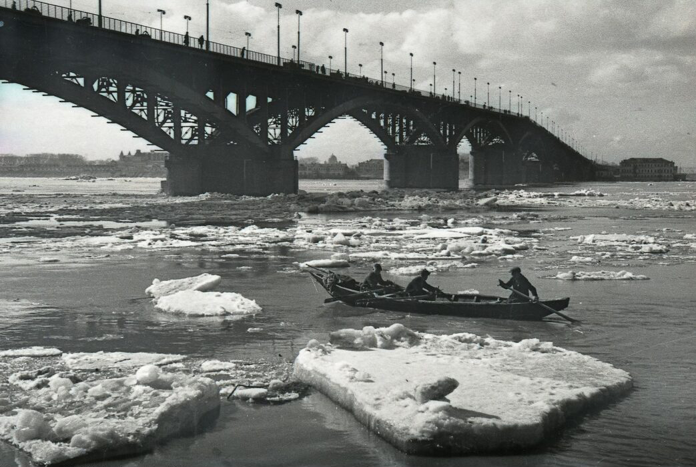

Канавинский мост

Канавинский мост через Оку, первоначально называвшийся Окским, был построен в 1930-1933 годах и стал первым постоянным мостом, соединившим нагорную и заречную части города. До его строительства переправа осуществлялась на плашкоутных (наплавных) мостах, которые разводились для прохода судов. Длина моста составляет 795 метров, он имеет семь арочных пролетов. Мост располагался в непосредственной близости от Стрелки и грузового порта, что делало его стратегически важным объектом.
В советский период
Во время Великой Отечественной войны Канавинский мост был единственной переправой через Оку, связывавшей оборонные предприятия левобережья (ГАЗ, «Красное Сормово», авиазавод) с центром города и железнодорожным узлом. Его уничтожение парализовало бы снабжение всех заводов. Зенитная установка на крыше собора Александра Невского прикрывала подходы к мосту, и ни одна бомба за всю войну не поразила переправу. Мост оставался единственным до 1965 года, когда был построен Молитовский мост.